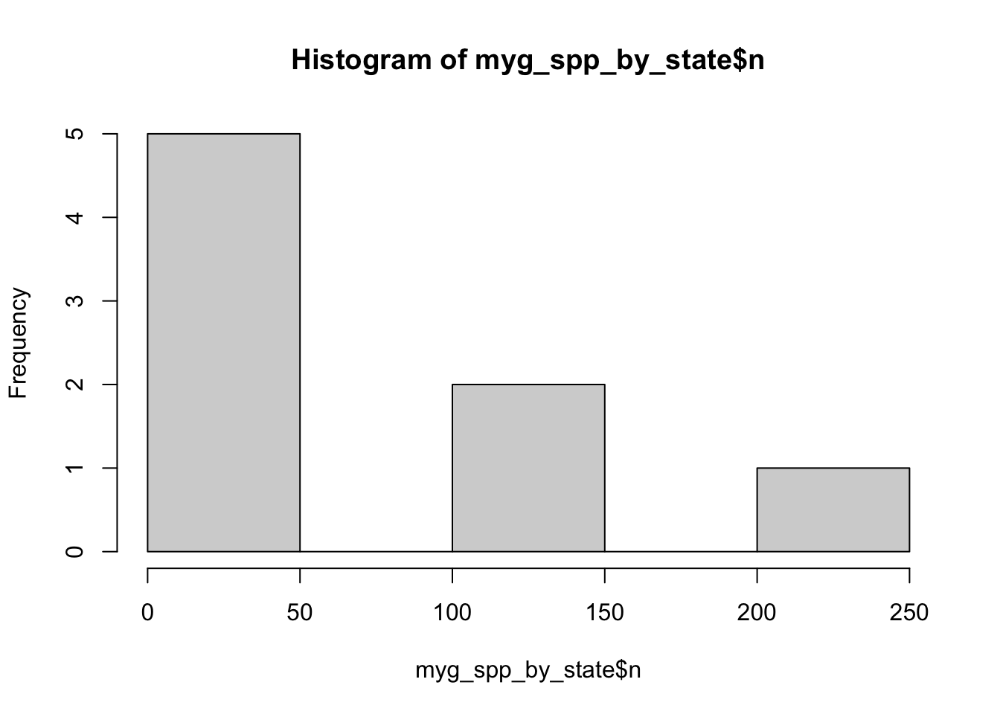

2 Methods and Statistical Analyses
2.1 Data retrieval
We used data from Atlas of Living Australia (ALA) for this study. We downloaded occurrence records using the galah R package using the following criterion:
- Found in Australian mainland and Tasmania.
- Identified to a taxon rank of species.
- Basis of record of either:
- Preserved specimen
- Material sample
- Machine observation
- Human observation
- Coordinate uncertainty of less than 1000 meters or has a value of NA (citizen science records or human observations are typically entered as NA)
We downloaded data for this report on the 20 January 2024 and it contained XXXXX records
We also used ALA’s data quality assertions to further refine our download. We excluded occurrence records using the following criterion:
- Coordinates are equal to 0
- Coordinates are presumed swapped e.g. when latitude is entered as longitude
- Latitude and longitude values are presumed negated
- Coordinates our out of range
- Taxon excluded by the ALA
- Taxon considered as a questionable species
The above assertions excluded XXXX records, a break down of records for each assertion is summarised in Table. 1
2.2 Data overview
After the initial data retrieval the data were summarised to provide an overview of the number of records, species, and families represented, as well as the broad distribution of these across Australian states. The basis of records and data quality assertions were also investigated. This provided a broad overview of data quality and facilitated review by taxonomic experts.
The full data overview report can be found at …
2.2.1 Species
There are 545 species in total.
The below barplot shows the distribution of the number of records across species.
The below table shows the number of records of each species.
2.2.2 Family
Barplot showing the number of species in each family:

2.2.3 Taxonomic overview by state
Top 3 most recorded species in each state:
# A tibble: 24 × 3
# Groups: stateProvince [8]
stateProvince species n
<chr> <chr> <int>
1 Australian Capital Territory Missulena occatoria 357
2 Australian Capital Territory Atrax yorkmainorum 134
3 Australian Capital Territory Paraembolides brindabella 66
4 New South Wales Atrax robustus 5593
5 New South Wales Missulena occatoria 2288
6 New South Wales Missulena bradleyi 2195
7 Northern Territory Missulena pruinosa 244
8 Northern Territory Selenocosmia stirlingi 198
9 Northern Territory Aname humptydoo 74
10 Queensland Missulena occatoria 2059
11 Queensland Missulena bradleyi 1743
12 Queensland Seqocrypta jakara 1629
13 South Australia Blakistonia aurea 1267
14 South Australia Missulena occatoria 1038
15 South Australia Idiosoma subtriste 912
16 Tasmania Hadronyche venenata 750
17 Tasmania Teranodes montana 465
18 Tasmania Chenistonia trevallynia 325
19 Victoria Hadronyche modesta 1001
20 Victoria Missulena occatoria 978
21 Victoria Stanwellia grisea 594
22 Western Australia Aname mellosa 2850
23 Western Australia Bungulla bertmaini 790
24 Western Australia Gaius tealei 530Barplot showing the number of species and families by state:

Map showing the number of species by state:

Map showing the number of families by state:

2.2.4 Basis of record
Total counts of basis of record types. GBIF definitions are provided underneath the table (https://gbif.github.io/parsers/apidocs/org/gbif/api/vocabulary/BasisOfRecord.html).
basisOfRecord n percent
PRESERVED_SPECIMEN 71300 87.16
HUMAN_OBSERVATION 9510 11.62
MATERIAL_SAMPLE 988 1.21
MACHINE_OBSERVATION 10 0.01PRESERVED_SPECIMEN: An occurrence record describing a preserved specimen.
HUMAN_OBSERVATION: An occurrence record describing an observation made by one or more people.
MATERIAL_SAMPLE: An occurrence record based on samples taken from other specimens or the environment.
MACHINE_OBSERVATION: An occurrence record describing an observation made by a machine.
2.2.5 Overview of assertions
Various tests are run on occurrence data in the Atlas of Living Australia, resulting in assertions about the content and quality of the data. These Assertions help users gauge whether data is fit for their purposes and allow for easy data filtering. In the data, Assertions are logical variables (TRUE/FALSE) and take the value TRUE when they apply to the associated occurrence record. Descriptions of Assertions can be found at https://github.com/AtlasOfLivingAustralia/ala-dataquality/wiki.
For the analysis of endemism hotspots, we have focused on spatial and taxonomic assertions because accurate identification of taxa and their spatial distributions is imperative to the calculation of endemism metrics and subsequent mapping.
2.2.5.1 Spatial assertions
We investigated a range of spatial assertions and deemed the following safe to bypass when refining the data download:
COORDINATE_UNCERTAINTY_METERS_INVALID
We performed visual checks and flagged records did not seem to be out of species’ range. They were mostly cases wherecoordinateUncertaintyinMeterswas NA. We know iNaturalist records input NA forcoordinateUncertaintyinMeters, therefore in refining the data download we will include records wherecoordinateUncertaintyinMetersis NA or less than 1000 m. We will remove flagged values for a sensitivity analysis later on.COORDINATE_ROUNDED
The original coordinates were rounded to six decimals (~ 1 m precision) to simplify processing. The level of precision lost will not affect the endemism analysis.
The following will be used to refine the data download as they indicate coordinates outside of the given country (records flagged as TRUE will be excluded):
COORDINATE_OUT_OF_RANGEPRESUMED_NEGATED_LONGITUDEPRESUMED_NEGATED_LATITUDEPRESUMED_SWAPPED_COORDINATEZERO_COORDINATE
2.2.5.2 Taxonomic assertions
The following assertions were used to identify taxonomic discrepancies in the data and allow for review by taxonomic experts:
TAXON_MATCH_FUZZY - is flagged when the supplied scientific name (raw_scientificName) does not exactly match the taxonomic backbone of the Atlas.
2.3 Data cleaning
After cleaning the data using assertions, several additional errors and unwanted records needed to be manually removed. Only terrestrial species which are native to Australia were to be retained. Additionally, all records needed to be correctly identified and geographically correct.
Several processes were used to identify and remove all unsuitable records. The types of records which needed to be removed included:
- Taxonomic errors and invalid species names
- Species introduced to Australia
- Marine species
- Records with geographic errors.
- Additionally, any subspecies level identifications were reclassified to species level.
2.3.0.1 Taxonomic Errors
Firstly, records not identified to species level were removed. While this was already specified during data retrieval, some higher order records remain in the data.
myg_species <- myg_spiders |> dplyr::filter(taxonRank == "species")Out of 192557 records, 110421 higher order records were removed. 82136 species level records remain.
To ensure all records had valid species names, the Australian Faunal Directory (AFD) was used.
The (AFD) is an online catalogue of taxonomic and biological information on all animal species known to occur within Australia and its territories.
A list of valid species names was downloaded from the AFD and was compared to the species names in our dataset, suhbsetting any records that did not have a matching valid name.
afd <- open_dataset(here("data/afd_05-2023_clean.parquet"))
# Filter down to Arachnida
arachnids <- afd |>
filter(CLASS == "ARACHNIDA") |>
collect()
# Subset species in ALA data that DID NOT match with the AFD
AFD_unmatched <- myg_species |>
filter(! scientificName %in% arachnids$FULL_NAME) |>
pull(scientificName) |>
unique()We identified 16 records with invalid species names.
The AFD also list synonyms for listed species, which are often outdated species names. For all records that did not match the AFD, we check if they are synonyms of listed species.
unmatched_ala_sp <- myg_species |>
filter(! scientificName %in% arachnids$FULL_NAME) |>
pull(scientificName) |>
unique()
issynonym <- unmatched_ala_sp %in% word(arachnids$SYNONYMS, 1, 2)There was record which matched an AFD listed Synonym, and it was updated with the correct species name. All other records with invalid species names were removed.
2.3.0.2 Introduced Species
Any species which are not native to Australia needed to be removed from our dataset. To identify all introduced species in the dataset, we used species lists from the World Spider Catalogue (WSC) and the Global Register of Invasive and Introduced Species (GRIIS).
The (WSC) is a comprehensive online database of spiders from around the world, with detailed taxonomic information, distribution maps, references and images.
wsc <- read_csv(here("data/wsc/species_export_20230929.csv"))Rows: 51483 Columns: 10
── Column specification ────────────────────────────────────────────────────────
Delimiter: ","
chr (7): species_lsid, family, genus, species, subspecies, author, distribution
dbl (3): speciesId, year, parentheses
ℹ Use `spec()` to retrieve the full column specification for this data.
ℹ Specify the column types or set `show_col_types = FALSE` to quiet this message.introduced_taxa <- wsc |>
filter(str_detect(distribution, pattern = "Introduced to.*Australia"))
introduced_taxa_wfullname <- introduced_taxa |>
mutate(scientific_name = paste(genus, species)) Introduced species in the WSC matched with 0 records in our data.
(GRIIS) is a project by the IUCN SSC Invasive Species Specialist Group to compile annotated and verified country-wise inventories of introduced and invasive species.
# Join distrubtion.txt and taxon-edit.txt
griis_distrib <- read.delim(here("data/griis-australia-v1.6/distribution.txt"))
griis_taxon <- read.delim(here("data/griis-australia-v1.6/taxon-edited.txt"))
# check for missing values
setdiff(griis_distrib$id, griis_taxon$id) |> length() # 24 missing[1] 24setdiff(griis_taxon$id, griis_distrib$id) # none missinginteger(0)# join lists
griis_all <- left_join(griis_distrib, griis_taxon, by = "id") # Apply left_join dplyr function
# filter by class = arachnida
str_subset(griis_all$class, "Arachnida") # there are no introduced arachnids in this listcharacter(0)The GRIIS does not list any arachnids as being introduced to Australia.
2.3.0.3 Marine Species
The World Register of Marine Species (WoRMS) was used to identify and remove marine species from the data.
WoRMS provides a authoritative and comprehensive list of names of marine organisms, including currently valid and alternative names.
We then read the output to find matches between ALA data and WoRMS output.
wormsOutput <- readRDS(here("output/worrms_myg_wm_records_taxamatch.rds"))
wormsOutput$match_type[1] "phonetic" "phonetic" "phonetic" "phonetic" "phonetic" "near_3" "near_3" #find exact matches between our ALA data and worms output
length(which(wormsOutput$match_type %in% "exact"))[1] 0wormsOutput$match_type %in% "near"[1] FALSE FALSE FALSE FALSE FALSE FALSE FALSEwormsOutput$scientificname[1] "Nahia" "Niahia" "Nia"
[4] "Naia" "Castalia (Naia)" "Cantharus assimilis"
[7] "Synstyela michaelseni"wormsOutput$search_term[1] NA NA NA
[4] NA NA "Cantuaria assimilis"
[7] "Synothele michaelseni"wormsOutput |> select(scientificname, search_term, match_type)# A tibble: 7 × 3
scientificname search_term match_type
<chr> <chr> <chr>
1 Nahia <NA> phonetic
2 Niahia <NA> phonetic
3 Nia <NA> phonetic
4 Naia <NA> phonetic
5 Castalia (Naia) <NA> phonetic
6 Cantharus assimilis Cantuaria assimilis near_3
7 Synstyela michaelseni Synothele michaelseni near_3 names(wormsOutput) [1] "AphiaID" "url" "scientificname"
[4] "authority" "status" "unacceptreason"
[7] "taxonRankID" "rank" "valid_AphiaID"
[10] "valid_name" "valid_authority" "parentNameUsageID"
[13] "kingdom" "phylum" "class"
[16] "order" "family" "genus"
[19] "citation" "lsid" "isMarine"
[22] "isBrackish" "isFreshwater" "isTerrestrial"
[25] "isExtinct" "match_type" "modified"
[28] "search_term" 2.3.0.4 Geographic Errors
2.3.0.5 Subspecies
We checked for subspecies by counting the number of words in the “species” field. Any records with more than 2 words in the “species” field were flagged as potential subspecies level identifications.
count_words <- function(string) {
words <- strsplit(string, "\\s+")[[1]] # Split the string into words
return(length(words)) # Return the number of words
}
word_counts <- lapply(myg_spiders$species |> unique(), count_words)There were 0 records with more than two words in the “Species” field, and therefore, no subspecies identifications were found within our data.
2.3.0.6 Duplicate Records
nrow(myg_spiders)[1] 192557head(myg_spiders)# A tibble: 6 × 25
decimalLatitude decimalLongitude eventDate scientificName
<dbl> <dbl> <dttm> <chr>
1 -51.3 123. 2020-06-22 00:00:00 Idiosoma clypeatum
2 -51.1 149. 1998-04-21 00:00:00 Namea
3 -49.6 142. 2020-06-22 00:00:00 Idiosoma formosum
4 -47.1 123. 2020-06-21 00:00:00 Idiosoma formosum
5 -47.1 123. 2020-06-21 00:00:00 Idiosoma clypeatum
6 -46.1 168. 1991-03-07 00:00:00 Arbanitis
# ℹ 21 more variables: taxonConceptID <chr>, recordID <chr>,
# dataResourceName <chr>, occurrenceStatus <chr>, phylum <chr>, class <chr>,
# order <chr>, family <chr>, genus <chr>, species <chr>, taxonRank <chr>,
# raw_scientificName <chr>, raw_vernacularName <chr>, stateProvince <chr>,
# locality <chr>, coordinatePrecision <dbl>,
# coordinateUncertaintyInMeters <dbl>, basisOfRecord <chr>,
# institutionCode <chr>, datasetName <chr>, collectionCode <chr>Mygalomorphae_clean <- myg_spiders |>
filter(!is.na(decimalLatitude) & !is.na(decimalLongitude)) |>
filter(!duplicated(decimalLatitude) & !duplicated(decimalLongitude))
nrow(Mygalomorphae_clean)[1] 10596head(Mygalomorphae_clean)# A tibble: 6 × 25
decimalLatitude decimalLongitude eventDate scientificName
<dbl> <dbl> <dttm> <chr>
1 -51.3 123. 2020-06-22 00:00:00 Idiosoma clypeatum
2 -51.1 149. 1998-04-21 00:00:00 Namea
3 -49.6 142. 2020-06-22 00:00:00 Idiosoma formosum
4 -47.1 123. 2020-06-21 00:00:00 Idiosoma formosum
5 -46.1 168. 1991-03-07 00:00:00 Arbanitis
6 -45.9 170. 1951-03-18 00:00:00 Porrhothele antipodiana
# ℹ 21 more variables: taxonConceptID <chr>, recordID <chr>,
# dataResourceName <chr>, occurrenceStatus <chr>, phylum <chr>, class <chr>,
# order <chr>, family <chr>, genus <chr>, species <chr>, taxonRank <chr>,
# raw_scientificName <chr>, raw_vernacularName <chr>, stateProvince <chr>,
# locality <chr>, coordinatePrecision <dbl>,
# coordinateUncertaintyInMeters <dbl>, basisOfRecord <chr>,
# institutionCode <chr>, datasetName <chr>, collectionCode <chr>2.4 Generation of \(\alpha\) hulls
2.5 Quantifying species richness and endemism
2.5.1 Sample redundancy
2.5.2 Sample window and moving window
2.5.3 Endemism metrics
2.6 Data and code availability
All data and code to reproduce the R portion of our analyses can be found at our Github repository.